- Lavamos, pelamos y cortamos en trozos las patatas, zanahorias, calabaza, y cebolletas. Picamos la mitad de un pimiento verde y el puerro.
- Poner a rehogar la cebolla a fuego lento con una pizca de sal. Cuando esté un poco traslúcida, metemos a rehogar la zanahoria, el puerro, y el pimiento, también con un poquito de sal.
- Cuando la verdura empiece a dorarse, aádimos la calabaza y la patata y lo removemos todo junto unos minutos.
- Añadir la salsa de tomate y cubrir las verduras con agua y añadir un puñado y medio de sal.
- Ponemos a fuego alto en la olla exprés hasta que salga humo. Después, bajamos a fuego bajo y lo dejamos 20 minutos.
- Enfriamos la olla hasta que se baje el pitorro, la abrimos, y trituramos con una batidora. Rectificamos de sal si es necesario.
- Servimos caliente.
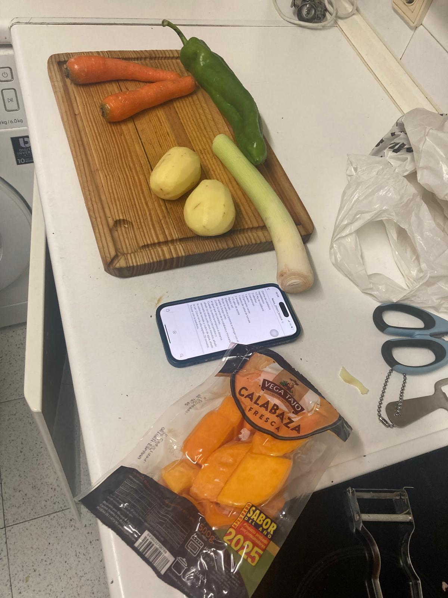 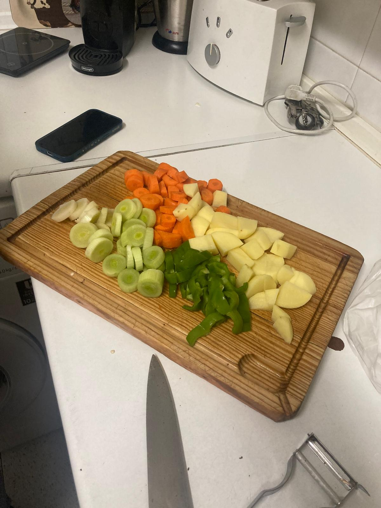 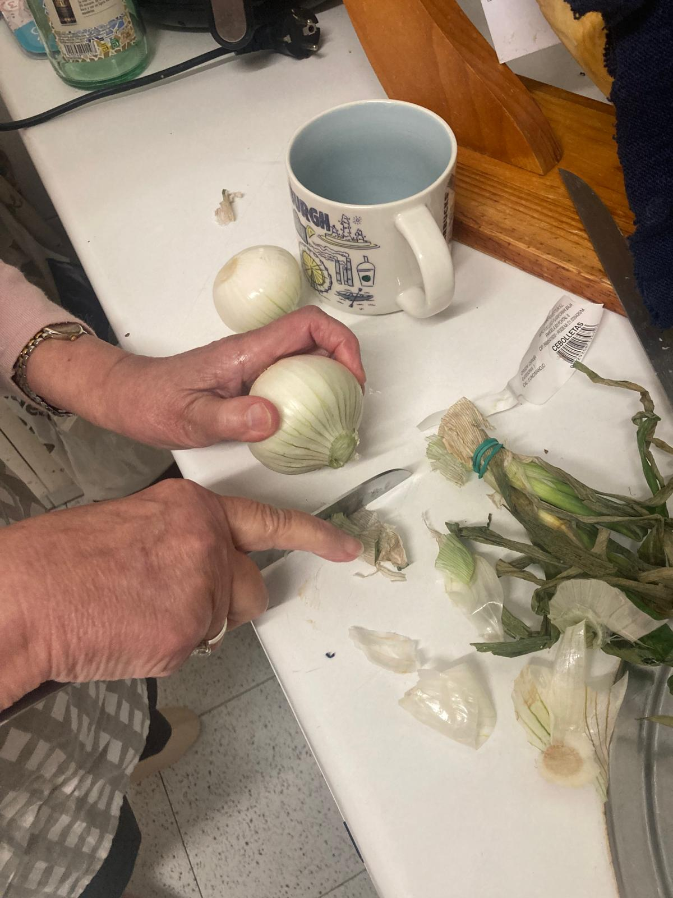
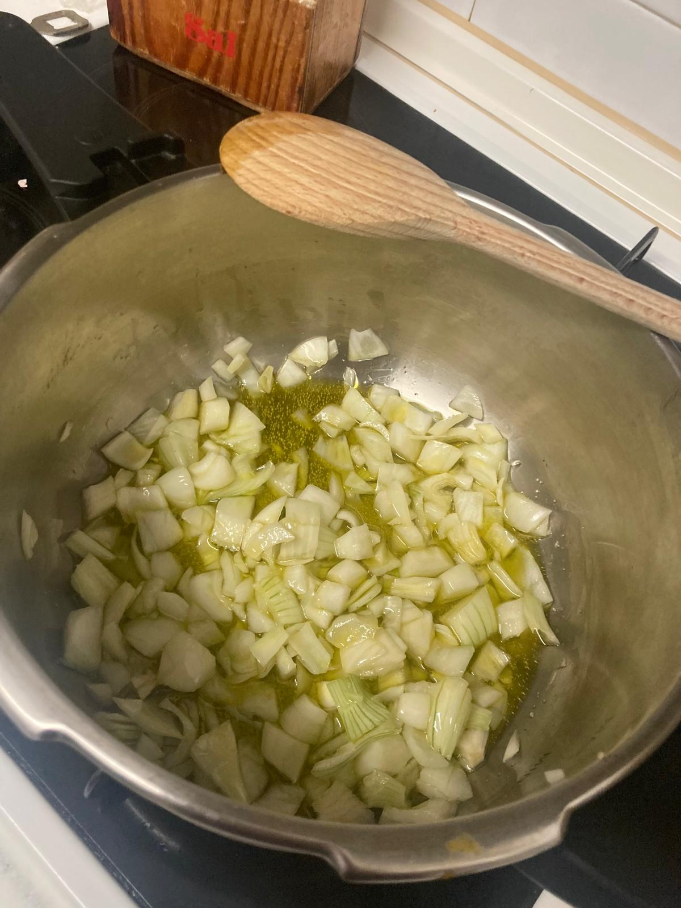 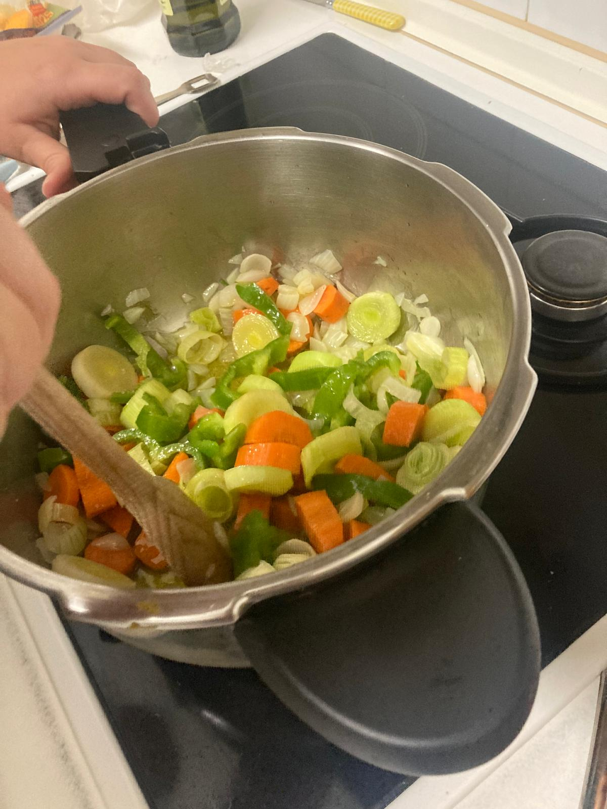 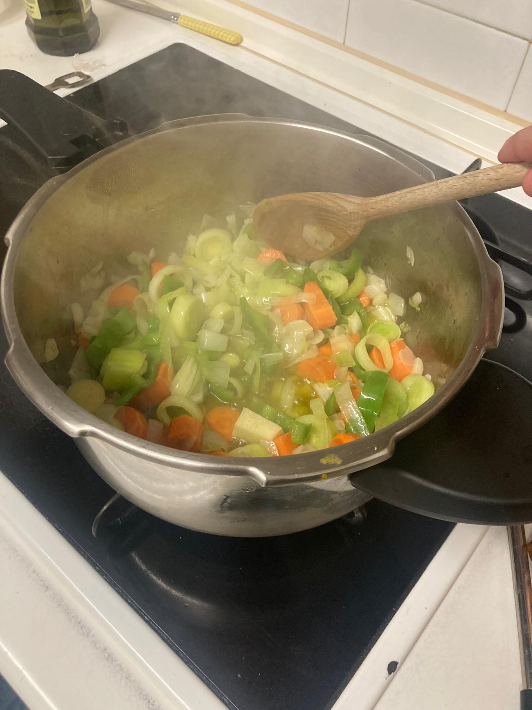
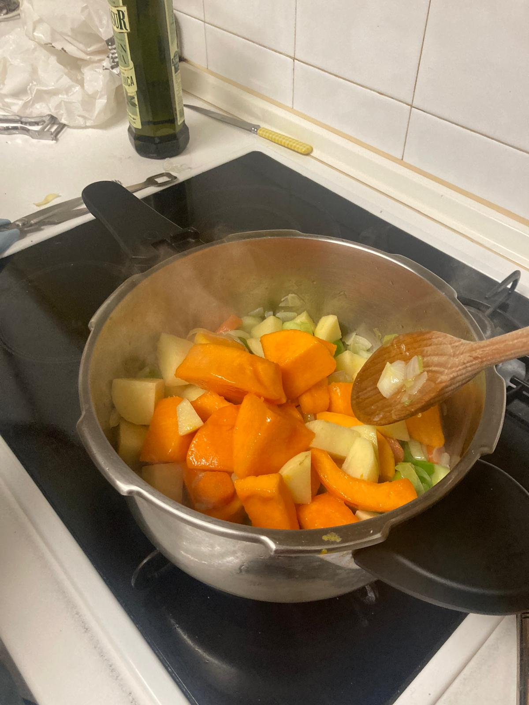
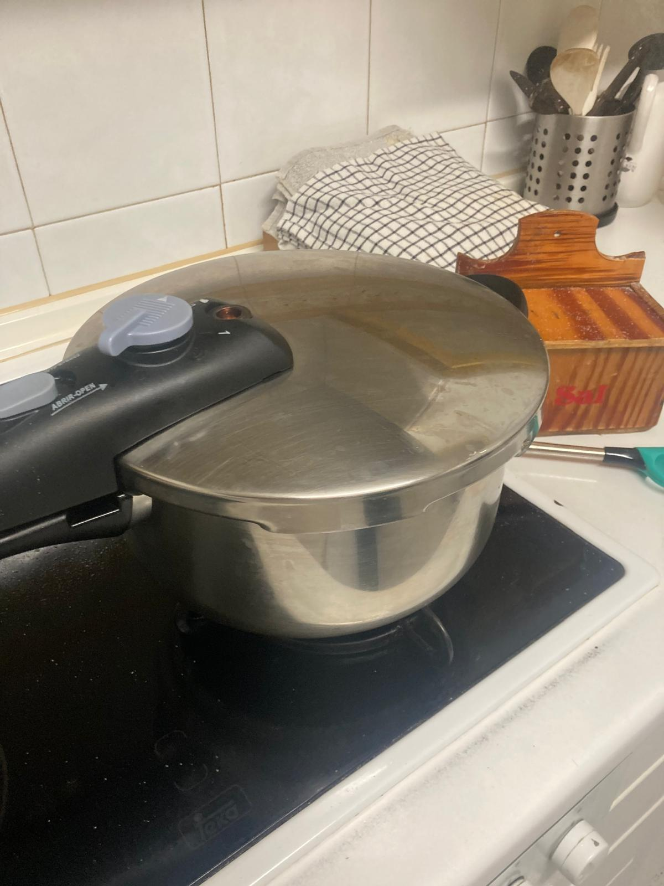
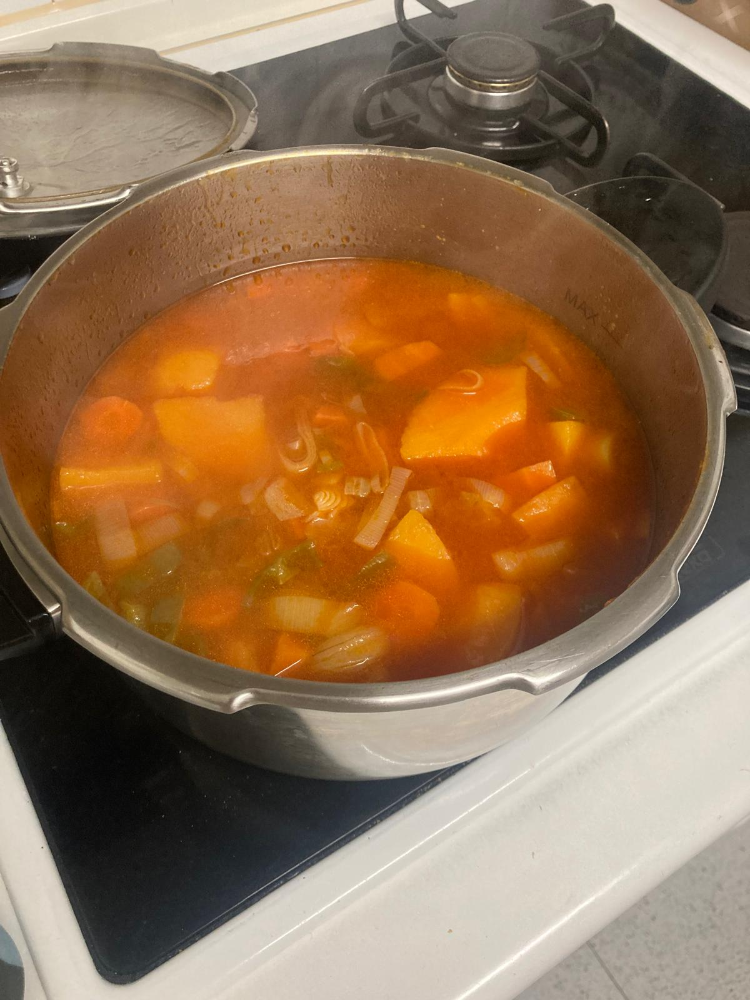 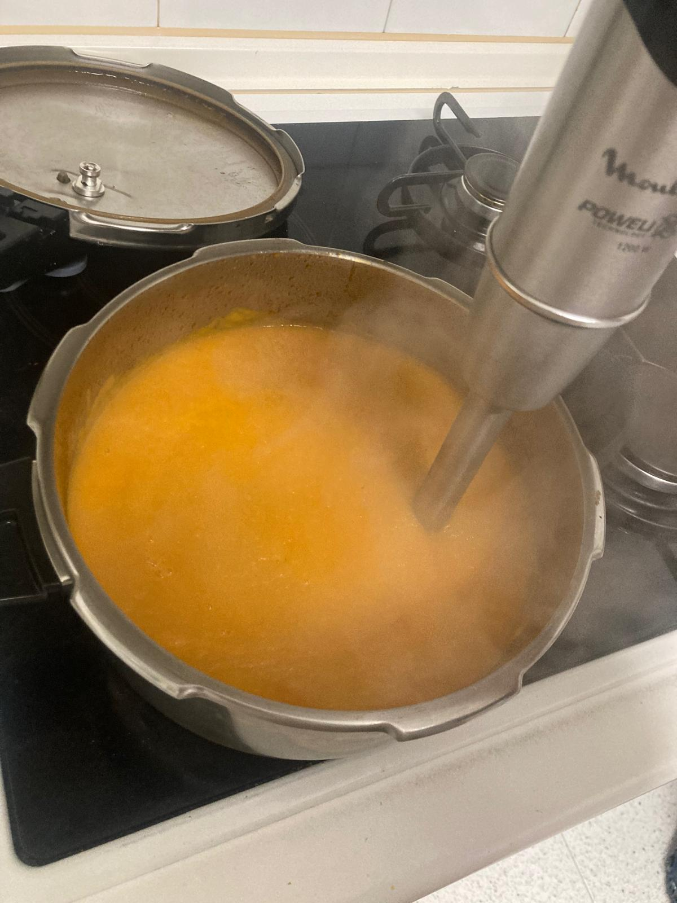
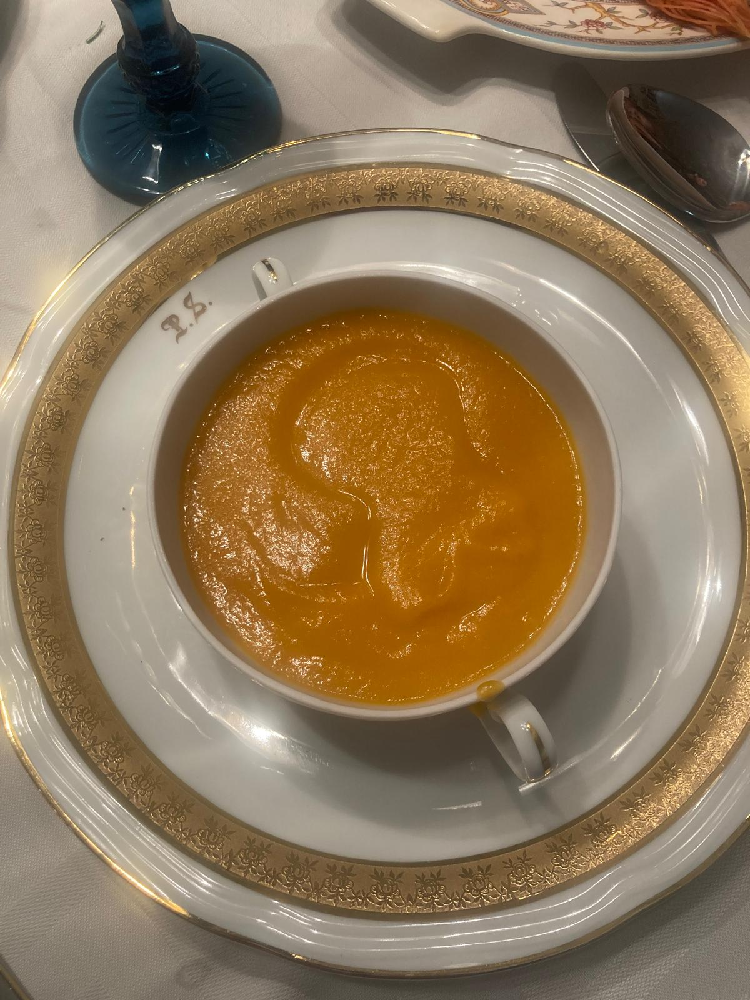